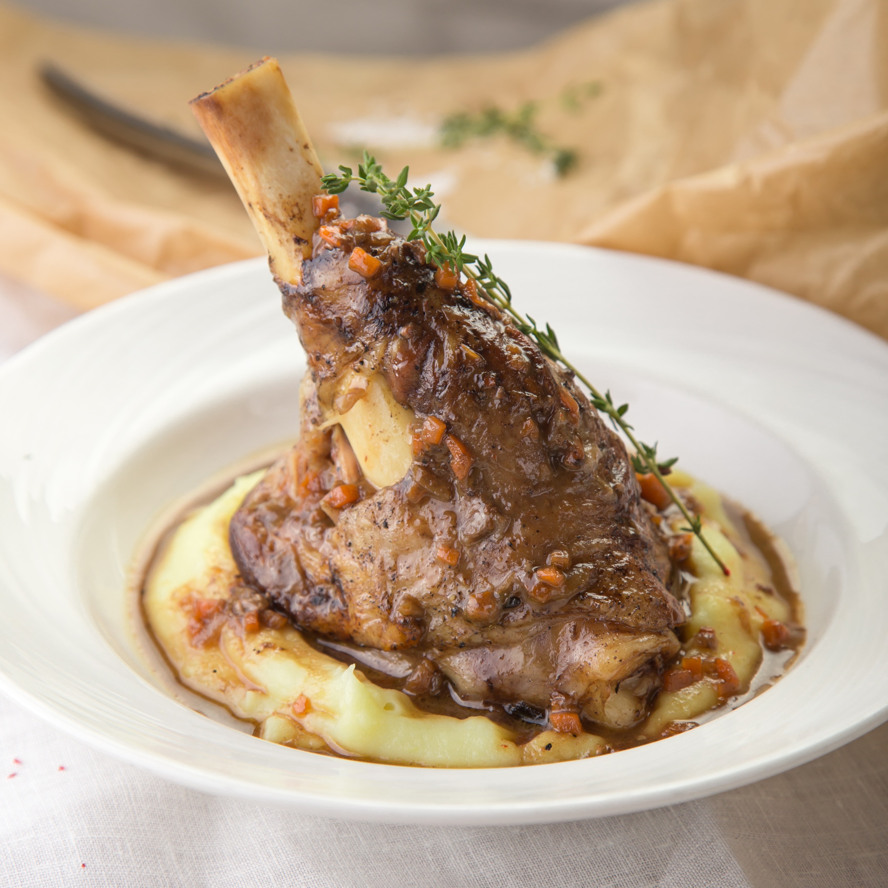

Description
Delicious grilled leg of lamb in a wonderful herb marinade.
- 1 (4pound) lamb shank
- 3 tablespoons olive oil
- 1 teaspoon dried rosemary
- 1/4 teaspoon ground thyme
- 1/4 teaspoon dried basil
- Cut slits into lamb shank in a criss-cross pattern about 1 inch
apart and 1/2 inch deep; place into a shallow dish.
- Whisk olive oil, rosemary, thyme, basil, parsley, mint, black
pepper, salt, and cayenne pepper together in a bowl; brush evenly
over the lamb shank.
- Refrigerate lamb at lAdd shallot and cook,
stirring often, until east 1 hour.
- Preheat grill for medium heat and lightly oil the grate.
- Stir lemon juice and honey together in a small bowl until smooth.
- Cook lamb shank on preheated grill, basting every 15 minutes with the lemon juice
mixture, until browned on the outside and red in the center, about 30 minutes
per side.
- An instant-read thermometer inserted into the center should read 125 degrees
F (52 degrees C).
Return to top
Back to main page